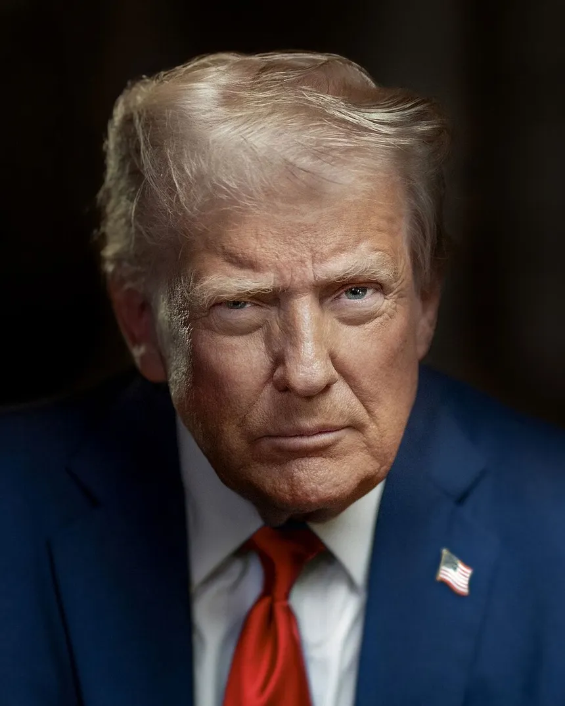

US President Donald Trump has imposed a 50% tariff on a wide range of goods imported from Canada, in retaliation for what he called "unequal treatment" of US cars, dairy and alcohol. Everyday consumer items like wine and hockey sticks and industrial goods such as cement are among the goods targeted. However, several key exports will be spared, such as energy, potash, critical minerals and fish. Prime Minister Mark Carney responded by saying Canada stood ready to "intensify" trade talks with US in the coming weeks. The White House said the duties would take effect in 30 days. It marks a major escalation in trade tensions between the North American neighbours. The new duties apply to all covered goods regardless of whether the product was included under the existing free trade agreement between Canada, the US and Mexico, known as the USMCA. "This is the latest in a series of unilateral US trade actions that began with the US imposing a series of tariffs in direct violation of the Canada-United States-Mexico Agreement," Carney said in a statement on X. He also cited "threats to Canadian sovereignty", a possible reference to Trump's calls to make America's northern neighbour the 51st US state. Monday's import taxes build on trade barriers already in place between the two nations. The US has been maintaining active tariffs ranging from 15% to 50% on Canadian steel, aluminium and copper. Washington also charges a 35% tariff on Canadian softwood lumber, alongside a 25% tax on non-US parts in cars. Canada has its own 25% counter-tariff on selected imports of American steel, aluminium and vehicles. Monday's announcement comes in the wake of President Trump's threat to impose tariffs over Canadian wildfire smoke drifting into US cities.